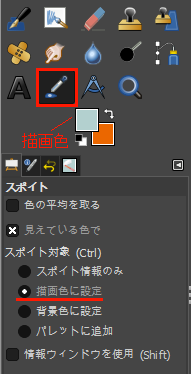
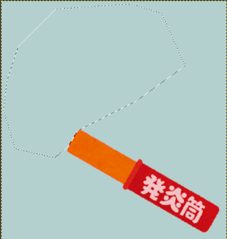

画像の一部を消す
画像の一部を消して、背景色で塗りつぶします。 ここでは消す画像部分を削除対象と呼びます。
Note
ここでは、例として発煙筒の火を消してみます。
選択ツールで削除対象を選択
選択ツールで削除対象を選択します。
Note
背景色が単一色であるよう場合、選択ツールは 自由選択 や 電脳はさみ を使えばよいでしょう。 電脳はさみはある程度境界線を自動で検知してくれます。 ここではその必要がないので、自由選択で切り取っています。
Tip
自由選択 は、ツールボックス下部のオプションで なめらかに と 境界をぼかす が選択できます。
状況に応じてチェックの有無を変更してください。
切り取り対象を囲った後、内部をダブルクリックするか、 Enter キーを押下することで、選択が確定します。
選択が確定すると、選択範囲が白と黒の動く破線で囲まれます。
選択範囲を塗りつぶす
選択範囲を背景色で塗りつぶします。
まず背景色をツール スポイト で取得し、その後、選択範囲を描画ツール 塗りつぶし で塗りつぶします。
ツール スポイト で色を取得する手順です。
- ツールボックスで
スポイトを選択 - ツールボックス下部のオプションで
スポイト対象を描画色に設定にする - 画像ウィンドウで背景色をスポイトする
描画色が設定されます。

続いて、選択範囲を描画ツール 塗りつぶし で塗りつぶします。
- ツールボックスで
塗りつぶしを選択 - 選択範囲内をクリック
塗りつぶされます。

ここで選択範囲を解除しておきます。
- 画像ウィンドウで右クリック
- コンテキストメニューから
選択>選択を解除を選択
Warning
次の作業で描画ツール 修正ブラシ を使います。
選択範囲を解除しておかなければ、思い通りの場所を修正できません。
細部を修正する
描画ツール 修正ブラシ で、切り取った跡の細部を修正します。
細部を修正するため、予めツールボックスの ズーム を使って適度に拡大しておきます。
Tip
キー Ctrl を押下しながらマウスのホイールを回転させることでも、拡大・縮小ができます。
修正手順です。
- ツールボックスから
修正ブラシを選択 - ツールボックス下部のオプションで
ブラシやサイズを調整 - 修正に利用したい画素辺りをキー
Ctrlを押下しながらクリックし、参照元として設定 - 修正箇所をドラッグして修正
Tip
描画ツール 修正ブラシ は、指定された 参照元 から修正箇所に画素を転写します。
GIMP のヘルプによれば、 修正ブラシ による転写は、「修復箇所への単純な画素（ピクセル）転写ではなく、修復箇所の周辺の画素情報までも考慮した転写」を行っています。
完成です。